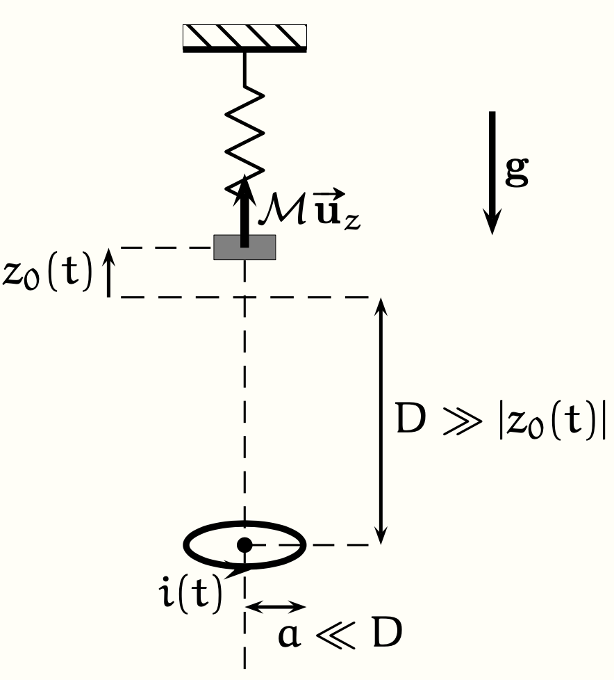

PrepOral
[MP] [Maison] [2000]
Oscillation d'un aimant suspendu
Enoncé
On considère un aimant de dipôle magnétique $\mathcal{M} \vec{u_z}$ et de masse $m$ suspendu via un ressort de raideur $k$ au plafond.
Dans l’axe de ce dipôle, on place à une distance $D$, lorsque l’aimant est à l’équilibre, une spire de rayon $a$ et de centre $O$,
dont on négligera l’auto-inductance, et de résistance $R$. On met en mouvement l’aimant en l’écartant de sa position d’équilibre et
on note $z_0(t)$ sa position repérée par rapport à la situation d’équilibre. Les conditions initiales sont
: $z_0(0) = b > 0$ et $\dot{z_0}(0) = 0$.
On supposera, dans le but de simplifier les calculs au maximum que $|z_0(t)| \sim b \ll D$ et que $a \ll D$.
On donne l'expression du champ magnétique dipolaire :
$$\vec{B}=\frac{\mu_0 \mathcal{M}}{4\pi r^3}(2\cos{\theta}\vec{u_r}+\sin{\theta}\vec{u_{\theta}})$$

Q. Étudier le mouvement de l’aimant.
[Etapes lors de la discussion :
1. A l’aide de la loi de Lenz, justifier que la présence
de la spire introduit un amortissement du mouvement de
l’aimant.
2. Établir l’expression du courant $i(t)$ traversant
la spire à l’ordre le plus bas en $z_0/D$. En déduire l’expression du moment
magnétique $\mathcal{M}'(t)$ de la spire.
3. Écrire l’équation du mouvement de l'aimant. En déduire le temps
caractéristique d’amortissement des oscillations de l’aimant. On pourra rappeller
la résultante des forces de Laplace sur un aimant : $\vec{F}=[(\mathcal{M} \cdot \vec{grad})\vec{B}]_{z}$
]
Commentaires
Encore jamais posé !